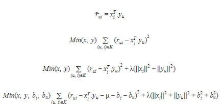

What are recommender systems?
A recommender system, or a recommendation system, is an information filtering system that attempts to predict a particular ‘rating’ or ‘preference’ a user would have for an item. It is widely used in different internet/online businesses such as Amazon, Netflix, Spotify, and also features in a wide range of social media like Facebook, Twitter and YouTube. By using recommender systems, these companies are able to provide better or more suited products/services/content that are personalized to a user based on his/her consumer behaviors. For the purpose of studying the intricate workings of Recommender Systems in further detail and to observe their role in presenting a user with similar items to their own preferences, it was decided to design and develop a web application based around a Movie recommender system. The purpose of this application is to observe the outcome a recommender system has with providing users with similar content whilst also personally honing my own skills in machine learning and new technologies.
Types of Recommender Systems
K-Nearest Neighbours (KNN)
kNN is a machine learning algorithm designed to find clusters of similar users based on common movie ratings and make predictions using the average rating of the top-k nearest neighbours. For example, we first present ratings in a matrix, with the matrix having one row for each item (movie) and one column for each user. Then, we find the k item that has the most similar user engagement vectors. An example of how this algorithm can be implemented to generate recommendations can be found below as a test prototype.

The Nearest Neighbour algorithm follows the patterns of other users who have rated products like the current user to make accurate recommendations.
Singular Value Decomposition (SVD)
The Singular Value Decomposition (SVD), a method from linear algebra that has been generally used as a dimensionality reduction technique in machine learning. SVD is a matrix factorisation technique, which reduces the number of features of a dataset by reducing the space dimension from N-dimension to K-dimension (where K is less than N). In the context of the recommender system, the SVD is used as a collaborative filtering technique. It uses a matrix structure where each row represents a user, and each column represents an item. The elements of this matrix are the ratings that are given to items by users.
SVD Algorithim